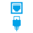
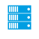

{kind=link}
Asset Administration Shells are a key building block for Industry 4.0. The reference implementation of the Asset Administration Shell that Eclipse BaSyx provides is a valuable contribution to the Industry 4.0 ecosystem. It enables also small and medium-sized enterprises to implement Industry 4.0 solutions.
Eclipse BaSyx: Industry 4.0 Operating System
Eclipse BaSyx is one of the first implementations of digital twins using the Asset Administration Shell.
BaSyx enables live data exchange between the physical system and its digital twin, which allows for real-time monitoring and control of physical systems. Live data exchange is facilitated by standardized communication protocols such as OPC UA and MQTT.
Eclipse BaSyx: Industry 4.0 Operating System
Eclipse BaSyx is the open source Industry 4.0 middleware. We realize all necessary standards and infrastructure components for Industry 4.0 production environments and provide the foundation for software platforms.
The Eclipse BaSyx Platform provides ready-to-use components and extendable software development kits (SDK) for Java, C++ and C#.
Eclipse BaSyx: Industry 4.0 Operating System
The Eclipse BaSyx Open Hour on the Java and C++ SDKs takes place every first Friday of the month.
The community discusses issues, new features, and conceptual aspects of the Eclipse BaSyx middleware.
Would you like to freely join the Eclipse BaSyx Open Hour? Please register here.
Asset Administration Shells
Asset Administration Shells (AAS) are the foundation of the Digital Twin with unified interfaces for all kinds of manufacturing assets. Eclipse BaSyx supports type 1, 2 and 3 AAS that enable static data, live data, and active negotiations.
Lot Size 1 Production
Eclipse BaSyx provides basic MES functionality to enable service oriented architectures (SOA) for production systems. Thus, the efficient production of lot size one becomes possible.

CONNECTIVITY
Connect OPC-UA, MQTT, and fieldbus devices with our data provider components. Integrate MES and ERP systems with your production systems. Use our components to secure your machine to machine communication.

INDUSTRY 4.0 INFRASTRUCTURE
Eclipse BaSyx implements all important Industry 4.0 infrastructure components including the the AAS registry, AAS and AAS sub model server components, as well as data provider components. Integrate data bases, backups, asset management, load balancers, and S3 storage, if necessary.
DATA CENTER INTEGRATION
Eclipse BaSyx scales with your requirements. We deliver Industry 4.0 as docker components that can be deployed in your IT. Whether you want to setup BaSyx on a PC server or integrate with your data center infrastructure, the choice is yours.

INTELLIGENCE
Use our pre-packaged analysis, visualization, and automation components to start your Industry 4.0 experience today!
Testimonials
Have a look what BaSyx users & partners said about the open source Industry 4.0 platform.
-

-
With the Eclipse BaSyx middleware, the transformation to Industry 4.0-capable production is significantly easier and faster. Software developers can directly apply the code provided in the form of embeddable libraries, saving valuable time that they would otherwise need to develop code themselves. The available examples significantly reduce the familiarization time with the Asset Administration Shell.

-
Eclipse Basyx enables us to implement a highly modular, versioned and distributed production system in an efficient and standardised way. By using management shells, a new standard methodology is used to stay one step ahead of increasingly flexible production requirements and the growing diversity of variants.

-
Data enables the development of AI applications for Industry 4.0, and is therefore the new gold in production. Eclipse BaSyx develops Asset Administration Shells and Digital Twins as uniform interface to production assets and thus enables both data access and also controlling of manufacturing processes. That is why we create our Shopfloor 4.0 product based on Eclipse BaSyx.

-
The development of Eclipse BaSyx is an essential step for process automation in companies and public administration. In the partnership with Fraunhofer IESE, Cisco supports the research on Eclipse BaSyx. For the future, it is a matter of being able to use the crucial data in the right place with open and standard-compliant development environments in a safe, efficient, and cost-effective manner. Eclipse BaSyx is an essential component for us to connect solutions for the data center with IoT solutions.

-
By using BaSyx and its asset administration shell (AAS) implementation, we were able to concentrate on use case onboarding and data exchange in the OI4 AAS reference implementation. That functionality helped us achieve our goal faster and more effectively. This approach underlines our goal of building and expanding ecosystems with existing standards and products.

-
Eclipse BaSyx with its interoperable architecture enables us and our customers to bring product data directly from product development to manufacturing. This is relevant for highly variable Configure-to-Order products. Also feedback from the shop floor to the engineering can be realized.

-
We use the Eclipse-Basyx technology as a standardized integration path when coupling MES components with Shopfloor equipment.

-
Together with Franka Emika GmbH, Objective Partner AG is developing a pay-as-you-go/asset as a service solution for a robot that autonomously performs rapid tests for the new coronavirus. This will make airports, for example, even safer in the future. We are developing the software services and digital twins for the rapid test robot with Eclipse BaSyx.

-
Thank to Eclipse Basyx, we were able to set up the asset administration shell into productive deployment within a few days.

-
With the Eclipse BaSyx middleware, the transformation to Industry 4.0-capable production is significantly easier and faster. Software developers can directly apply the code provided in the form of embeddable libraries, saving valuable time that they would otherwise need to develop code themselves. The available examples significantly reduce the familiarization time with the Asset Administration Shell.
Bosch Rexroth
-
The transition from the concept phase to implementation is he next step for the success of the Asset Administration Shell and Industrie 4.0. Open source projects such as Eclipse BaSyx enable the realization of prototypes already today. This accelerates the step to product-ready implementation of Industrie 4.0 concepts.
SAP
-
With Eclipse BaSyx, ZF was able to reduce the required time for the integration of a new tool from 2 days to less than 20 minutes. In our future assembly workstation setup, Eclipse BaSyx realizes the interface to tools and tracks the manufacturing progress with a virtual process model.
ZF